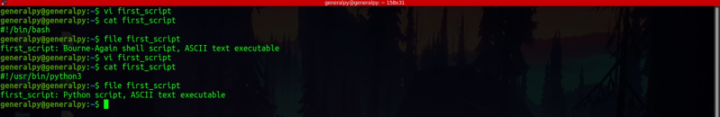
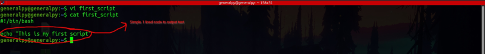
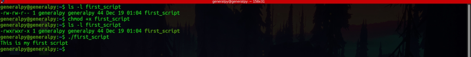

There are 3 main components of a bash scripts :
1. Shebang line : This is a special statement which tells which interpreter we are using . Shebang line starts with #! and then we add path of our interpreter. If this line is ommited, the parent shell will run that script in its own environment. Some shell assumes script to be bash script and run them using bash.
For bash, shebang line will be
#!/bin/bashIf we point shebang to any other interpreter like python interpreter, the os will think that file is a python file and execute it using python.

We can clearly see effect of shebang.
We will use /bin/bash as we are working with bash shell.
2. Script content : This part is the actual code we want to run using that script. Here we write all commands we need.

3. Exit statement : This is an optional component which is helpful for other commands to know if script we ran executed successfully or not. There are many exit codes with their own meanings, where 0 means success, 1 means generic error and other codes have there own meanings.
Exit code is issued by using exit command.
exit exit_codeIf not provided exit code of last command is used.
How to run bash scripts ?
To run a script, you first have to make it executable using chmod command . Then, simply write file name with absolute or relative path.

Full code of above script
#!/bin/bash
echo "This is my first script"
exit 0